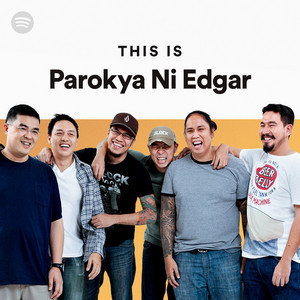
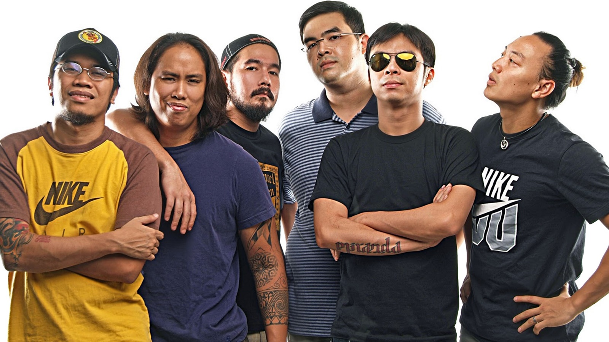

Parokya ni Edgar (lit: Edgar's Parish) is a Filipino band formed in 1993. The band is known for its original rock novelty songs and often satirical covers of popular songs both foreign and local. The band is adept at playing in various musical genres.
Parokya ni Edgar has been referred to by local media outlets and numerous award-giving bodies as "Pambansang Banda ng Pilipinas" (The National Band of the Philippines). Despite having "Edgar" in the band's name, none of the members are named Edgar.
Originally named Comic Relief, the band's initial members were a group of high school students composed of vocalists Chito Miranda, Jeric Estaco, and Vinci Montaner, along with guitarists Mikko Yap and Gab Chee Kee, all hailing from Ateneo de Manila University. They were regulars in after-school jam sessions, before performing an opening number for an Eraserheads concert. This served as their break in the music industry and prompted them to add a drummer and bassist – Ateneo schoolmate Dindin Moreno and Miranda's childhood friend Buwi Meneses, respectively. Around the same time they changed the band's name to Parokya ni Edgar. After high school, Mikko and Jeric withdrew from the band to pursue other interests. Soon after, the remaining band members invited Darius Semaña, Meneses's former bandmate, to take the role of lead guitar.
The band name's origin had been a subject of debate among fans as the band members had never given full confirmation. It was not until 2013 that Chito Miranda officially addressed it through a post on their Facebook page. The title "Parokya Ni Edgar" came from a joke a classmate named Bambi Cuna made during one of their high school classes. Sources state that the class subject was Filipino. When the teacher asked Cuna where Jose Rizal's fictional hero, Crisostomo Ibarra (in the novel Noli Me Tangere) was educated, it was said that Cuna made up a daft answer, "sa Parokya ni Edgar". Then vocalist Jeric Estaco decided on impromptu to introduce the band as "Parokya ni Edgar" in their first live performance. From there, the band name just stuck.
By the late 1990s, PNE became regular performers in Club Dredd, a popular club in Manila at the time. The band slowly gained popularity during the height of the Filipino rock explosion, with the local rock community welcoming the influence of foreign grunge acts such as Nirvana, Pearl Jam and Soundgarden.
Eventually, the late managing director of Universal Records, Bella Dy Tan, signed them as contract artists after witnessing one of their Club Dredd performances. Soon, their initial recordings "Buloy", "Trip (Siopao Na Special)" and "Lutong Bahay (Cooking Ng Ina Mo)" gained radio airplay. Their first album, Khangkhungkherrnitz(1996) became a triple platinum hit in the Philippines, having sold 120,000 units. The next albums were equal successes - Buruguduystunstugudunstuy (1997) was awarded triple platinum, Jingle Balls Silent Night Holy Cow (1998) with gold, and Gulong Itlog Gulong (1999) with triple platinum. This included the single "Halaga", one of the most popular songs in their career. "Halaga" was such a hit in the country that it further boosted PNE's career, cementing their name into OPM history.[3]
After a five-year hiatus, they released their junior studio album Edgar Edgar Musikahan in 2002. On July 14, 2003, they released the studio album Bigotilyo, with the main single "Mr. Suave". "Mr. Suave" proved to be just as popular as its predecessors and stayed on the music charts for more than a year. The song became so popular in the Philippines that a few commercials and political campaigns borrowed stanzas from it. Same Year in 2003, Parokya celebrated their 10th Year Anniversary with new gigs and concerts in various shows in the Philippines and also around the world like Hong Kong, Canada such as Alberta, British Columbia, Ontario & more Canadian provinces tour were performed for PNE, and the United States such as New York, New Jersey, Hawaii, Arizona, California and among other U.S. States. were performed by PNE.
2004 was the year of release of Inuman Sessions Vol. 1, PNE's first compilation DVD album celebrating their 11th anniversary. The DVD showcased the band's prerecorded live studio performance of their hit songs to a selected audience. The DVD album met success in sales nationwide. They released their 9th studio album, Middle-Aged Juvenile Novelty Pop Rockers in 2010 with the single "Paki-usap Lang (Lasingin Nyo Ako)". The album was met with moderate success in both charts and sales. In 2011, PNE joined the roster of Tanduay's First Five and RockFest replacing long running Tanduay endorser 6cyclemind.
The following year, PNE released their 2nd compilation DVD album Inuman Sessions Vol. 2 - a follow up to their Inuman Sessions Vol. 1. Later that same year, Montaner officially left the band on good terms with both the members and crew. 2013 marked PNE's 20th anniversary in the OPM industry. The band launched their 13th album Bente as commemoration, and as this was a milestone, Vinci Montaner temporarily reunited with the band for the album's cover art and signings. In 2014, PNE was awarded with the MYX Magna Award for their artistic contribution to OPM Rock History & also celebrating their 20th anniversary of their opm rock band of the mid 90's. They are the 2nd OPM Rock Band to receive this award after Eraserheads in 2009.
All throughout 2015, the band toured selected cities in the United States; they headlined at the Landmark Loews Theater in Jersey City, New Jersey on March 21, 2015.[4] That same year, the band began recording for their next album and contained the tracks "Sing" and "Lagi Mong Tatandaan", the former featuring Rico Blanco. The album is entitled Pogi Years Old. The cover album was revealed on September 2, 2016 through their Facebook page and expected to be released by 2016. Former member Vinci Montaner will appear on the album as a featured artist.[5] On September 9, 2016, the band held a free surprise show at the Bonifacio Shrine in Manila. [6] The album was released on October 17, 2016 nationwide and on digital format.[7] The band would held an album launch at Eastwood Central Plaza on October 16, 2016. This marks the return of Vinci Montaner, who would join permanently days later.[8] On November 22, 2017, Parokya was now named as the newest celebrity music star inductee in the 2017 Eastwood City Walk of Fame in Eastwood City Mall Quezon City for their influence in Pinoy rock music. Parokya was the 3rd related music group and 1st OPM Rock band to be inducted to the Eastwood City Walk Of Fame. [9] [10] Parokya Ni Edgar also recently celebrated their 25th silver anniversary last October 2018 following with more concerts and more new gigs to come.
A musical adaptation of Parokya Ni Edgar's discography in cooperation with longest running gag comedy show Bubble Gang entitled Bubble Gang Parokya Na To: A Laugh Story The Musical was recently performed last February 15, 2019 at Waterfront Hotel Cebu City, produced by GMA Kapuso Concerts. This was Parokyas 1st musical stage play and also the 4th OPM music artist overall for musical staging play after Eraserheads "Ang Huling El Bimbo" in 2015, Apo Hiking Society's "Eto Na: Musical nAPO" in 2017,and Aegis "Rak Of Aegis: The Musical" in 2018. The band also performed for their 25th silver anniversary concert in the U.S. & Canada Tour entitled Parokya 25 Live In The U.S. & Canada last March 2019. As of this 2020, Parokya is still active with more concerts and is scheduled to release their new single together with the band Kamikazee.[11]